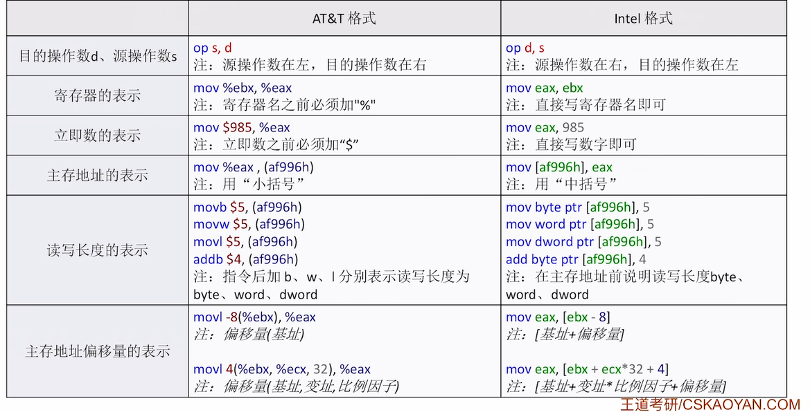

汇编指令快速入门
x86 汇编语言基础
- x86 架构起源：
- 始于 1978 年 Intel 发布的 8086 处理器。
- 后续型号（如 80286、80386 等）都保持了指令集的向下兼容性。
- “x86”这个名称就是源于处理器型号中传统的“86”后缀。
汇编语言指令基础
以
mov指令为例：mov指令的作用与表示方法：- 基本功能：将源操作数 (
s) 的值复制到目的操作数 (d) 所指的位置。 - 格式：通常为
mov d, s。 - 操作数表示：源操作数用
s(Source) 表示，目的操作数用d(Destination) 表示。 - 典型特征：在
mov指令中，逗号前是目的操作数的位置，逗号后是源操作数的内容。
- 基本功能：将源操作数 (
寄存器、立即数与内存地址的标识：
- 蓝色标注：表示寄存器（如
eax,ebx）。 - 紫色标注：表示立即数（如
5）。 - 绿色带中括号：表示内存地址（如
[af996h]）。
- 蓝色标注：表示寄存器（如
内存地址前缀的含义与数据长度：
- 内存地址前通常有数据长度前缀（如
dword ptr）。 - 三种前缀类型：
dword ptr：表示双字 (Double Word)，即 32 比特。word ptr：表示单字 (Word)，即 16 比特。byte ptr：表示字节 (Byte)，即 8 比特。
- 固定格式：前缀必须包含
ptr，例如dword ptr [地址]。
- 内存地址前通常有数据长度前缀（如
具体
mov指令的解析：- 寄存器间传输：
mov eax, ebx→ 将ebx寄存器中的值复制到eax寄存器。 - 立即数传输：
mov eax, 5→ 将立即数5存入eax寄存器。 - 内存到寄存器：
mov eax, dword ptr [af996h]→ 将内存地址af996h处的 32 位（双字）数据复制到eax寄存器。 - 立即数到内存：
mov byte ptr [af996h], 5→ 将立即数5存入内存地址af996h处的 1 字节（字节）空间。
- 寄存器间传输：
汇编语言中数据表示的特征：
- 内存地址特征：
- 必有中括号
[]。 - 前有数据长度说明（
dword ptr,word ptr,byte ptr）。 - 十六进制常以
h结尾。
- 必有中括号
- 立即数特征：直接包含在指令中的十进制或十六进制数值。
- 内存地址特征：
x86 架构 CPU 寄存器：
- 寄存器的命名与特点：
- 命名规则：以
e开头（Extended），表示是 32 位寄存器。 - 共同特点：所有以
e开头的寄存器均为 32 位长度。
- 命名规则：以
- 通用寄存器：
- 寄存器列表：
EAX、EBX、ECX、EDX。 - 命名含义：
X表示未知（可存储任意数据），这些寄存器可用于各种通用数据操作。
- 寄存器列表：
- 变址寄存器：
- 寄存器列表：
ESI、EDI。 - 命名含义：
S= Source (源)，D= Destination (目的)，I= Index (索引)。 - 主要用途：常用于处理线性表、字符串等数据结构，进行数据的移动和遍历。
- 寄存器列表：
- 堆栈寄存器：
- 寄存器列表：
EBP：堆栈基指针 (Base Pointer)。ESP：堆栈顶指针 (Stack Pointer)。
- 特殊用途：专门用于实现函数调用时的堆栈管理，维护函数的栈帧。
- 寄存器列表：
- 寄存器的灵活使用：
- 16 位模式：去掉
e前缀（如AX、BX），表示使用该寄存器值的低 16 位。 - 8 位模式：对于
AX,BX,CX,DX等 16 位寄存器，还可以进一步分为高 8 位和低 8 位：AH：高 8 位。AL：低 8 位。
- 考试重点：考研中32 位模式（
e前缀）最常见。
- 16 位模式：去掉
- 寄存器在考试中的识别：
- 识别技巧：以
e开头的名称（如eax,ebx,esp等）必定是寄存器。 - 考试特点：在 408 考研中，基本上只会出现 32 位寄存器。
- 识别技巧：以
- 寄存器的命名与特点：
常用 x86 汇编指令
常用的算术运算指令
算术运算指令执行数学计算。
- 操作数表示：
d(destination，目的操作数)：运算结果的存放位置，只能是寄存器或主存地址。s(source，源操作数)：提供数据进行运算，可以是寄存器、主存地址或常量。
- 指令特点：
- 运算结果总是存回
d所指向的位置。 - 不允许两个操作数同时来自主存（这是为了提高效率，避免一次指令执行中进行多次内存访问）。
- 运算结果总是存回
让我们看看具体的算术指令：
- 加法指令：
add d, s：执行 $d \leftarrow d + s$，源自英文 "addition"。
- 减法指令：
sub d, s：执行 $d \leftarrow d - s$，源自英文 "subtract"。
- 乘法指令：
mul s：无符号乘法。被乘数隐含在eax中（对于 32 位操作），64 位结果存放在edx:eax中（高 32 位在edx，低 32 位在eax）。imul s：有符号乘法（i表示 integer）。操作数处理方式与mul类似。
- 除法指令：
div s：无符号除法。64 位被除数隐含在edx:eax中。除法完成后，商在eax，余数在edx。idiv s：有符号除法。操作数处理方式与div类似。
- 其他运算：
neg d：取负数，执行 。inc d：自增，执行 。dec d：自减，执行 。
操作数表示法：
<reg>：表示寄存器操作数。<mem>：表示内存操作数。<con>：表示常量（立即数）操作数。
不允许两个操作数都是内存操作数， 是为了减少访存数目
三、常用的逻辑运算指令
逻辑运算指令对数据的位进行操作。
- 与运算：
and d, s：位与运算，$d \leftarrow d \land s$。 - 或运算：
or d, s：位或运算，$d \leftarrow d \lor s$。 - 非运算：
not d：位取反运算，$d \leftarrow \neg d$。 - 异或运算：
xor d, s：位异或运算，源自 "exclusive or"。 - 移位运算：
shl d, s：逻辑左移 (shift left)。shr d, s：逻辑右移 (shift right)。
四、其他常用指令
除了算术和逻辑运算，还有一些关键的指令类别：
- 流程控制指令：
cmp(compare)：比较操作数。test：位测试操作。jmp(jump)：无条件跳转。jxxx(conditional jump)：各种条件跳转指令（如je相等则跳转，jg大于则跳转等），用于实现分支和循环结构。
- 函数调用指令：
push：将数据压入堆栈。pop：从堆栈弹出数据。call：调用子程序或函数。ret：从子程序或函数返回。
- 数据转移指令：
mov(move)：最基本的数据传送指令。
AT&T 与 Intel 格式区别
